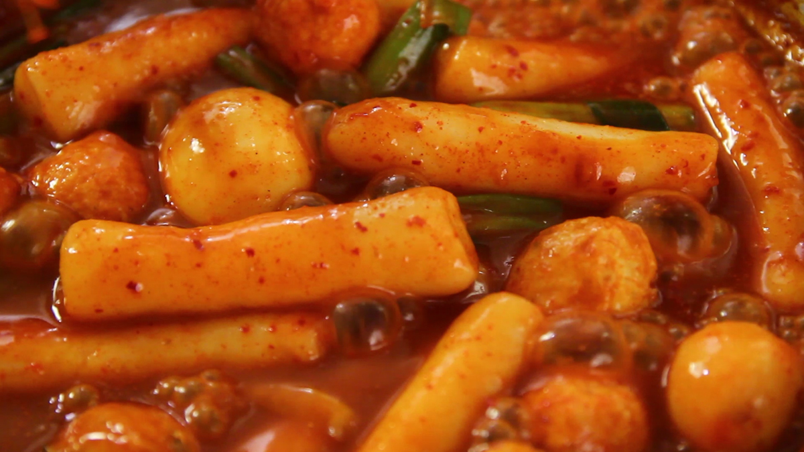

Tteokbokki

Description
Tteokbokki (떡볶이), or simmered rice cake, is a popular Korean food made from small-sized garae-tteok (long, white, cylinder-shaped rice cakes) called tteokmyeon (떡면; "rice cake noodles") or commonly tteokbokki-tteok (떡볶이 떡; "tteokbokki rice cakes"). Eomuk (fish cakes), boiled eggs, and scallions are some common ingredients paired with tteokbokki in dishes. It can be seasoned with either spicy gochujang (chili paste) or non-spicy ganjang (soy sauce)-based sauce; the former is the most common form, while the latter is less common and sometimes called gungjung-tteokbokki (royal court tteokbokki).
Today, variations also include curry-tteokbokki, cream sauce-tteokbokki, jajang-tteokbokki, seafood-tteokbokki, rose-tteokbokki, galbi-tteokbokki and so on. Tteokbokki is commonly purchased and eaten at bunsikjip (snack bars) as well as pojangmacha (street stalls). There are also dedicated restaurants for tteokbokki, where it is referred to as jeukseok tteokbokki (impromptu tteokbokki). It is also a popular home dish, as the rice cakes (garae-tteok) can be purchased in pre-packaged, semi-dehydrated form.
Ingredients
- 1 pound of cylinder shaped rice cake, bought or homemade. (Use a little more if you’re not adding hard boiled eggs and fish cakes)
- 4 cups of water
- 7 large size dried anchovies, with heads and intestines removed
- 6 x 8 inch dried kelp
- ⅓ cup hot pepper paste
- 1 tablespoon hot pepper flakes
- 1 tablespoon sugar
- 3 green onions, cut into 3 inch long pieces
- 2 hard boiled eggs, shelled (optional)
- ½ pound fish cakes (optional)
Steps
- Add the water, dried anchovies, and dried kelp to a shallow pot or pan.
- Boil for 15 minutes over medium high heat without the lid.
- Combine hot pepper paste, hot pepper flakes, and sugar in a small bowl. Remove the anchovies and kelp from the pot and add the rice cake, the mixture in the bowl, the green onion, and the optional fish cakes and hard boiled eggs. The stock will be about 2½ cups.
- Stir gently with a wooden spoon when it starts to boil. Keep stirring until the rice cake turns soft and the sauce thickens and looks shiny, which should take about 10 -15 minutes. If the rice cake is not soft enough, add more water and continue stirring until soften. When you use freshly made rice cake, it takes shorter time. If you use frozen rice cake, thaw it out and soak in cold water to soften it before cooking.
- Remove from the heat and serve hot.